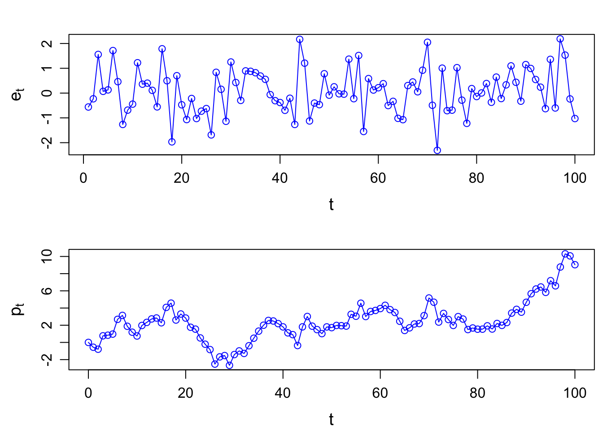

For the preparation of the final exam, it is highly encouraged to practice with the quiz questions on Canvas.
Three quizzes are available, covering various topics. You are expected to take all of them.
Get familiarized with the Equation Editor on Canvas.
You can either choose the math symbol provided by the editor, or type LaTeX equations directly, which is must faster!
See a LaTeX equation tutorial HERE.
You are expected to type equations in the final exam whenever a formula is needed in the calculation.
A market in which prices always “fully reflect” available information is called “efficient.”
Formally, the market is said to be efficient with respect to some information set.
Three forms of efficiency corresponding to differing information sets:
Efficiency with respect to an information set implies that it is impossible to make economic profits by trading on the basis of [that information set].
Here by economic profits, we mean “abnormal/superior” returns after adjustment for risk and costs.
We need equilibrium (asset pricing) models for risk adjustments, such as CAPM, to determine the “normal” returns appropriate for bearing the level risk in a security.
If the abnormal return is unforecastable, and in this sense “random”, then the Efficiency Market Hypothesis (EMH) is not rejected.
Market efficiency can be tested by revealing information to market participants and measuring the reaction of security prices. If prices do not move when info is revealed, then the market is efficient w.r.t. that info.
Challenges of testing EMH: Any test of efficiency must assume an equilibrium model that defines normal security returns. This leads to our null is a joint test of market efficiency and a correct equilibrium model.
The result of this is that when we reject the null, this could be because the market is truly inefficient or because an incorrect equilibrium model has been assumed.
With the wrong asset pricing model, we can wind up rejecting efficiency. It would be easy to find abnormal returns to be forecastable if we had the wrong equilibrium.
Asset pricing models give the equilibrium return; abnormal returns are deviations of real prices from equilibriums.
Types of market efficiency \(\rightarrow\) Violations of efficiency:
Fig. 1: EMH
Perfect efficiency exists only in the idealized frictionless world of the imagination. Abnormal returns will exist if there are costs of gathering and processing information. Since market efficiency is an idealization that is economically unrealizable, what we can do is to measure relative efficiency. And if some markets turn out to be particularly inefficient, then investors will be well-prepared to take advantage of the opportunity to make profits.
Most tests suggest that if the security (demeaned) return cannot be forecasted, then market efficiency cannot be rejected.
A process \(\{p_t\}\) is called a Random Walk (RW) if:
\[ p_t = \mu + p_{t-1} + e_t \]
where \(E(e_t)=0\) and \(\text{Var}(e_t)=\sigma^2\).
\(\mu\) is called the expected price change or drift.
\(\{e_t\}\) is called the innovations, disturbances, or increments.
There are differing hypothesis regarding to its distribution:
RW1: \(e_t\sim \text{IID } (0, \sigma^2)\) meaning increments are Independently and Identically Distributed (IID).
RW2: \(e_t\sim \text{INID } (0, \sigma^2)\) independent but not (necessarily) identically distributed (INID) increments. RW2 is weaker than RW1 because it relaxes the assumption of identically distributed increments.
RW3: \(e_t\) is uncorrelated. \(\text{Cov}[e_t, e_{t-k}]=0\) for all \(k\neq 0\). This is the weakest form of RW.
RW3 allows for dependence in higher moments.
An example that satisfiies RW3 but not RW1 and RW2: \(\text{Cov}[e_t,e_{t−k}]=0\) for all \(k\neq 0\), but \(\text{Cov}[e_t^2,e_{t−k}^2]\neq0\) for some \(k\neq 0\). In words, first moments are uncorrelated, but second moments are correlated; therefore, such a process is not independent.
Let \(p_t=\ln P_t\) be the natural logarithm of price \(P_t\), and \(r_t=\mu+e_t=\Delta p = p_t-p_{t-1}\). Then \(r_t\) is the log return at time \(t\).
Cowles and Jones (1937) proposed a test of RW1 using the frequency of sequences and reversals in historical stock returns.
Sequences: pairs of consecutive returns with the same sign (\((+,+)\) or \((-,-)\));
Reversals: consecutive returns with opposite signs (\((+,-)\) or \((-,+)\)).
More formally, we define \(I_t\) an indicator variable as:
\[ \begin{align*} I_t = \begin{cases} 1 & \text{if } r_t>0 \\ 0 & \text{if } r_t\leq0 \end{cases} \end{align*} \]
\(I_t\) is an analogy to the Bernoulli coin-tossing experiments. That is, when it is a fair coin, \(X_t\sim \text{Bernoulli}(p=1/2)\).
\[ \begin{align*} X_t = \begin{cases} 1 & \text{if it is a head, with prob. } p=\frac{1}{2} \\ 0 & \text{if it is a tail, with prob. } 1-p=\frac{1}{2}. \end{cases} \end{align*} \]
The number of sequences (\(N_s\)) and reversals (\(N_r\)) can be expressed as functions of \(I_t\)’s.
\[ \begin{aligned} N_s &\equiv \sum_{t=1}^n Y_t, \quad \color{red}{Y_t} \equiv I_tI_{t-1} + (1-I_t)(1-I_{t-1}) \\ N_r &\equiv n-N_s. \end{aligned} \]
\(Y_t\) is thus a sequence indicator, \(Y_t=1\) if it is a sequence; \(Y_t=0\) if it is a reversal.
For simplicity, we often assume \(\mu=0\) (a driftless RW). \(r_t=p_t-p_{t-1}=e_t\). In other words, the increments \(e_t\) are first differences of the level of the random walk.
If \(p_t\) follows a driftless RW, then for any pair of consecutive returns, a sequence and a reversal are equally probable. We would expect \(N_s\) should be approximately equal to \(N_r\).
The Cowles-Jones test statistic is given by the ratio of the probability of a sequence \(\color{red}{\pi_s}\) to the probability of a reversal \(1-\pi_s\).
\[ \begin{equation} \tag{1} \widehat{\text{CJ}} \equiv \frac{N_s}{N_r} = \frac{N_s/n}{N_r/n} = \frac{\hat{\pi}_s}{1-\hat{\pi}_s} \xrightarrow{p} \frac{\pi_s}{1-\pi_s} = \text{CJ} = \frac{1/2}{1-1/2} = 1 \end{equation} \] where \(\xrightarrow{p}\) denotes convergence in probability.
Proof. 1 Show \(\pi_s=\frac{1}{2}\).
Hint: This is equivalent to show that \[ Y_t = \begin{cases} 1 & \text{with prob. } p= \pi_s \\ 0 & \text{with prob. } 1-p= 1-\pi_s . \end{cases} \]
\(r_t=\mu+e_t\). Such a drift, either positive or negative, makes sequences more likely than reversals.
For now we assume that log prices follow a normal random walk with drift:
\[ p_t=\mu+p_{t-1}+e_t, \quad e_t\sim N(0, \sigma^2). \] Then \(I_t\) is no longer a fair coin-toss but is biased in the direction of th drift, i.e.,
\[ I_t = \begin{cases} 1 & \text{with prob. } p= \color{red}{\pi} \\ 0 & \text{with prob. } 1-p= 1-\pi . \end{cases} \] where
\[ \pi \equiv P(r_t>0) = \Phi \left(\frac{\mu}{\sigma}\right). \] \(\pi\) is fully determined by the drift \(\mu\) and the volatility of increments \(\sigma\).
\(\Phi(.)\) is the cdf of the standard normal distribution.
Given that \(\Phi(.)\) is symmetric,
Proof. 2 Show \(\pi=\Phi \left(\frac{\mu}{\sigma}\right)\). \[ \begin{aligned}[b] P(r_t>0) &= P(\mu+e_t>0) \\ &= P(e_t>-\mu) \quad\quad\quad (\sigma>0, \text{dividing by a pos. number, inequality unchanged}) \\ &= P\left( \frac{e_t}{\sigma} > -\frac{\mu}{\sigma}\right) \quad\;\; e_t\sim N(0, \sigma^2), \text{ then } \frac{e_t}{\sigma}\sim N(0,1) \\ &= P \left( \frac{e_t}{\sigma} < \frac{\mu}{\sigma} \right) \\ &= \Phi \left(\frac{\mu}{\sigma} \right) \end{aligned} \square \]
Then we have
\[ \text{CJ} = \frac{\pi_s}{1-\pi_s} = \frac{\pi^2+(1-\pi)^2}{2\pi(1-\pi)} \]
Proof. 3 Show \(\pi_s=\pi^2+(1-\pi)^2\).
Hint: use the probability mass function of \(Y_t\) in Proof. 1.
The asymptotic distribution of \(\widehat{\text{CJ}}\) is given by
\[ \widehat{\text{CJ}} \overset{a}{\sim} N \left(\frac{\pi_s}{1-\pi_s}, \frac{\pi_s(1-\pi_s) + 2\big[\pi^3+(1-\pi)^3-\pi_s^3\big]}{n-(1-\pi_s)^4} \right) \] where \(\overset{a}{\sim}\) indicates that the distributional relation is asymptotic.
Refer to Campbell, Lo, and MacKinlay (1996) chapter 2 for proof.
# RW example
set.seed(123)
t <- seq(1, 100, by=1)
et <- rnorm(length(t), mean=0, sd=1) # IID N(0,1) increments
pt <- c(0, cumsum(et)) # driftless random walk
par(mfrow=c(2,1)); par(mar=c(3.5, 4, 2, .5), mgp=c(2.4,0.8,0))
plot(t, et, type="o", col="blue", xlab="t", ylab=expression(e[t]), cex.lab=1.2)
plot(c(0,t), pt, type="o", col="blue", xlab="t", ylab=expression(p[t]), cex.lab=1.2)
It <- ifelse(et>0,1,0)
It_1 <- c(NA, head(It, -1))
data <- cbind(et, It, It_1) %>% as_tibble()
data <- data %>% mutate(yt = It*It_1 + (1-It)*(1-It_1))
data## # A tibble: 100 × 4
## et It It_1 yt
## <dbl> <dbl> <dbl> <dbl>
## 1 -0.560 0 NA NA
## 2 -0.230 0 0 1
## 3 1.56 1 0 0
## 4 0.0705 1 1 1
## 5 0.129 1 1 1
## 6 1.72 1 1 1
## 7 0.461 1 1 1
## 8 -1.27 0 1 0
## 9 -0.687 0 0 1
## 10 -0.446 0 0 1
## # ℹ 90 more rowsNs <- sum(data$yt, na.rm=TRUE)
Nr <- length(t)-Ns
CJ_hat <- Ns/Nr
CJ_hat## [1] 1.12766pi_hat <- sum(It)/length(t)
pis_hat <- Ns/length(t)
sigma2 <- (pis_hat*(1-pis_hat) + 2*(pi_hat^3 + (1-pi_hat)^3 - pis_hat^2)) /(length(t))/(1-pis_hat)^4
sigma <- sqrt(sigma2)
t_stat <- (CJ_hat-1)/sigma
t_stat## [1] 0.6474637p_value <- pnorm(-abs(t_stat)) *2
list(test_statistic = t_stat, p_value = p_value)## $test_statistic
## [1] 0.6474637
##
## $p_value
## [1] 0.5173319The estimate is not statistically significantly different from \(1\). Therefore, we fail to reject the null hypothesis of random walk. Equivalently, we say that this provides little evidence against the random walk hypothesis.
One of the most direct and intuitive tests of the random walk hypotheses for an individual time series is to check for serial correlation, correlation between two observations of the same series at different dates.
Under random walk hypothesis, increments \(e_t\) are uncorrelated, that is
\[ \gamma(k) \equiv \text{Cov}(e_t, e_{t-k}) = 0 \quad \text{for all } k\neq 0 \] \(\gamma(k)\) is the autocovariance coefficient.
Or
\[ \rho(k) \equiv \frac{\text{Cov}(e_t, e_{t-k})}{\sqrt{\text{Var}(e_t)\text{Var}(e_{t-k})}} = 0 \quad \text{for all } k\neq 0 \] \(\rho(k)\) is the autocorrelation coefficient.
Proof. 4 To show that \[\text{Cov}(e_t, e_{t-k}) = 0\] is equivalent to show that \[\text{Cov}(r_t, r_{t-k}) = 0.\]
Rewrite \(r_t\) as
\[\begin{aligned} p_t &= \mu + p_{t-1} + e_t & \Rightarrow & \qquad r_t = \mu + e_t \\ p_{t-k} &= \mu + p_{t-k-1} + e_{t-k} & \Rightarrow & \quad r_{t-k} = \mu + e_{t-k} \end{aligned}\]\(r_t\) is the first-difference of price at time \(t\).
Then we have
\[\begin{aligned} \text{Cov}(r_t, r_{t-k}) &= \text{Cov}( \mu+e_t, \mu+e_{t-k}) \\ &= \text{Cov}(e_t, e_{t-k}) \qquad (\mu \text{ is a constant}) \end{aligned}\]That is, the covariance of the first-differences equals to the covariance of the increments. □
For a given sample \(\{r_t\}_{t=1}^T\), autocovariance and autocorrelation coefficients may be estimated by replacing population moments with sample counterparts:
\[ \begin{aligned} \hat{\gamma}(k) & = \frac{1}{T} \sum_{t=1}^{T-k} (r_t-\bar{r}_T) (r_{t+k}-\bar{r}_T), \quad 0\leq k <T \\ \hat{\rho}(k) &= \frac{\hat{\gamma}(k)}{\hat{\gamma}(0)} \\ \bar{r}_T &\equiv \frac{1}{T} \sum_{t=1}^{T} r_t \end{aligned} \] Sample autocorrelation coefficients are asymptotically independent and normally distributed with distribution:
\[ \sqrt{T} \hat{\rho} (k) \overset{a}{\sim} N(0,1) \] The sampling distribution yields a variety of autocorrelation-based tests.
Box-Pierce Q-statistic test a joint hypothesis that the first \(m\) autocorrelations are equal to zero. That is,
\[ H_0: \rho_1 = \rho_2 = \cdots = \rho_m = 0. \] Box and Pierce (1970) proposed the Q-statistic:
\[ Q_m \equiv T\sum_{k=1}^m \rho^2(k) \] Since \(\rho(k)\) is normally distributed, \(\hat{Q}_m\) is distributed as a chi-square distibution of \(m\) degrees of freemdom, that is \(Q_m \sim \chi_m^2\).
Ljung and Box (1979) provided a correction which yields a better for to the \(\chi_m^2\) for small sample sizes:
\[ Q_m' \equiv T(T+2)\sum_{k=1}^m \frac{\rho^2(k)}{T-k}. \] \(Q'_m\) is the usual Q-statistic version.
By summing the squared autocorrelations, the Q-statistic is designed to detect departures from zero autocorrelations in either direction and at all lags.
Box.test(diff(pt), lag=1, type="Ljung-Box")##
## Box-Ljung test
##
## data: diff(pt)
## X-squared = 0.067503, df = 1, p-value = 0.795Box.test(diff(pt), lag=1, type="Box-Pierce")##
## Box-Pierce test
##
## data: diff(pt)
## X-squared = 0.065517, df = 1, p-value = 0.798The VR(q) tests for the null hypothesis that the first \(q\) autocorrealtions are zero.
\[ \text{VR(q)} \equiv \frac{\text{Var}[r_t(q)]}{q\cdot \text{Var}[r_t]} \] where \(r_t(q)\equiv \sum_{k=0}^{q-1} r_{t-k}=r_t+r_{t-1}+\cdots+r_{t-q+1}\) is the \(q\)-period (log) return.
Lo and MacKinlay present a number of test statistics based on the VR(q). Check Lo and MacKinlay (1988, 1989) for example.